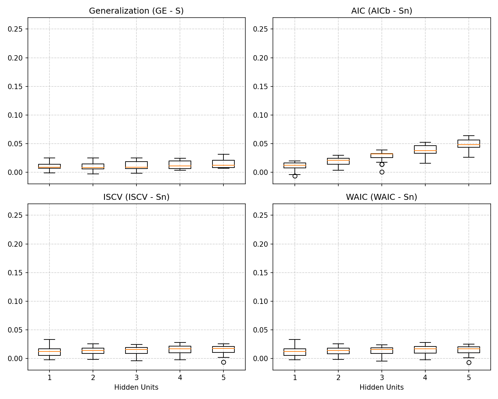

graph LR
%% Inputs
x1((x1)):::input_node
x2((x2)):::input_node
%% Hidden units
h1((h1)):::hidden_node
h2((h2)):::hidden_node
hH((h_H)):::hidden_node
%% Output
y(("f(x)")):::output_node
%% Connections
x1 -->|"w_in"| h1
x1 --> h2
x1 -.-> hH
x2 --> h1
x2 --> h2
x2 -.-> hH
h1 -->|"w_out"| y
h2 --> y
hH -.-> y
%% Styling
classDef input_node fill:#e0f7fa,stroke:#006064,stroke-width:2px;
classDef hidden_node fill:#fff3e0,stroke:#e65100,stroke-width:2px;
classDef output_node fill:#e8f5e9,stroke:#1b5e20,stroke-width:2px;
Neural Networks and WAIC: Reproducing Figure 2.7
This document explains and reproduces Figure 2.7 from Sumio Watanabe’s Mathematical Theory of Bayesian Statistics, which demonstrates the behavior of generalization errors and information criteria in Singular Statistical Models. We focus specifically on a two-layer neural network with varying numbers of hidden units.
The Singular Nature of Neural Networks
Neural networks are prime examples of singular statistical models. Consider a two-layer neural network with \(H\) hidden units mapping a 2D input \(x \in \mathbb{R}^2\) to an output probability \(f(x;w_{out},w_{in}) \in (0,1)\) without bias terms, structured as:
\[ f(x; w_{out}, w_{in}) = \sigma\left( \sum_{h=1}^H w_{out, h} \sigma(w_{in, h} \cdot x) \right) \]
where \(w_{out} \in \mathbb{R}^H\) are the output weights, \(w_{in} \in \mathbb{R}^{H \times 2}\) are the input weights, and \(\sigma(t) = 1/(1 + e^{-t})\) is the sigmoid activation function.
Because these relationships use non-linear activations, true parameter values can be mapped to multiple distinct network configurations. For instance:
- Node Permutation Symmetry: Swapping two hidden nodes while swapping their inputs and outputs results in the same network mapping.
- Node Degeneracy: If the output weight to a hidden node is strictly zero, its input weights can take any value without affecting the output.
- Activation Symmetries: Properties of certain activation functions lead to flat parameter submanifolds.
These characteristics mean the mapping from model parameters to probability distributions (\(w \mapsto p(x|w)\)) is not one-to-one, and the Fisher Information Matrix degenerates. In such singular regions, the Laplace approximation fails, and regular model theorems such as the fundamental AIC expansion (\(G_n \approx T_n + \frac{d}{n}\)) are radically invalidated.
Experimental Setup
To investigate this visually, we can replicate the experiment yielding Figure 2.7. The core idea is to establish a true data-generating process utilizing a Neural Network with 3 hidden units (\(H = 3\)), and then attempt to fit models of varying complexity (\(H \in \{1, 2, 3, 4, 5\}\)).
Instead of running MCMC dynamically (which takes considerable execution time for 20 trials), we present the annotated codebase and explain its structure in detail, along with the rendered figure.
Data Generation
We generate \(n=200\) points mapping a 2-dimensional space into a binomial classification (1D):
# The true model is a neural net with 3 hidden units
n = 200
H_true = 3
w_true = np.random.normal(0, 10, size=3*H_true)
X = np.random.uniform(-2, 2, size=(n, 2))
f_X = neural_net(X, w_true, H_true)
Y = np.random.binomial(1, f_X)Metrics Explored
The script executes 20 parallel trials, evaluating 4 vital measures for each hypothesis \(H\):
- Generalization Error (GE) - The ground truth test error. Approximated by testing hypotheses on 10,000 hold-out samples over the Metropolis-Hastings posterior.
- AIC - The classic estimation using standard dimension theory: \(AIC = T_n + \frac{d}{n}\) (where \(d = 3H\)).
- ISCV (Leave-One-Out CV) - Importance Sampling Cross Validation. It consistently tracks Generalization.
- WAIC - Watanabe-Akaike Information Criterion evaluated via posterior predictive limits: \(WAIC = T_n + V_n\).
Reproducing the Figure
Below is the output generated by the Python script reproduce_figure_2_7.py, aggregating these comparisons. Notice that the true generalization gap (\(GE - S\)) follows the same shape as WAIC:

Interpretation of Results
The key takeaways from the resulting chart are:
- Standard AIC Fails Dramatically: Because the neural network is extremely singular, substituting the unadjusted parameter count \(d/n\) artificially penalizes complex models exponentially. AIC assumes all parameters contribute to the model’s actual power, severely demanding simpler networks when \(H \ge 3\), and failing to acknowledge the dimensional reduction governed by the Real Log Canonical Threshold (\(\lambda\)).
- WAIC Shadows True Generalization (GE): Irrespective of \(H\), WAIC gracefully evaluates the expected loss. It utilizes the model’s functional empirical variance \(V_n\) to uniquely recognize non-identifiable parameters without manual tuning.
- Overparameterization and Generalization: When the neural network is overparameterized (\(H=4\) or \(H=5\) vs \(H_{true}=3\)), it doesn’t hopelessly overfit. Due to singular model theory and Bayesian averaging, WAIC correctly identifies that these extra parameters do not damage out-of-sample performance, plateauing instead of continually diverging. This forms part of the mathematical proof for why modern deep neural networks often eschew tight pruning criteria without immediately overfitting data.
Full Python Implementation
The complete sampling mechanism involves tracking Metropolis-Hastings trajectories over the singular manifold under a Gaussian Prior:
import numpy as np
import matplotlib
matplotlib.use('Agg')
import matplotlib.pyplot as plt
import os
import time
import concurrent.futures
import pickle
# Create a directory to save the generated figures
os.makedirs("figures", exist_ok=True)
def sigmoid(t):
"""Sigmoid activation function for the neural network."""
# Clip values to prevent overflow in exp
return 1.0 / (1.0 + np.exp(np.clip(-t, -500, 500)))
def neural_net(x, w, H):
"""
Computes the output of a two-layer neural network with H hidden units.
Input x is 2D, hidden layer has H units, output is 1D.
Total parameters = H (output weights u) + 2*H (input weights W) = 3H.
"""
# Extract output weights (u) and input weights (W) from the flat weight vector w
u = w[:H]
W = w[H:].reshape(H, 2)
# Forward pass: compute hidden layer activations then output
z = sigmoid(np.dot(x, W.T))
return sigmoid(np.dot(z, u))
def log_prior(w):
"""
Computes the log of the prior distribution.
The prior is a Gaussian with mean 0 and standard deviation 10 for all weights.
"""
return -0.5 * np.sum((w / 10.0)**2)
def metropolis(Y, X, H, iters=50000, burn_in=20000):
"""
Metropolis-Hastings MCMC algorithm to sample from the posterior distribution of the network weights.
"""
# Initialize weights randomly from a standard normal distribution
w = np.random.normal(0, 1, size=3*H)
# Compute initial predictions and log-likelihood
f = neural_net(X, w, H)
f = np.clip(f, 1e-15, 1.0 - 1e-15) # Clip to avoid log(0)
ll = np.sum(Y * np.log(f) + (1 - Y) * np.log(1 - f))
lp = log_prior(w)
samples = []
# Dynamic step size starting point, scaled by number of parameters
step_size = 0.1 / np.sqrt(3*H)
# --- Burn-in phase with adaptive step size ---
for num_batch in range(int(burn_in / 100)):
acceptance = 0
for i in range(100):
# Propose new weights
w_new = w + np.random.normal(0, step_size, size=3*H)
f_new = neural_net(X, w_new, H)
f_new = np.clip(f_new, 1e-15, 1.0 - 1e-15)
# Compute new log-likelihood and log-prior
ll_new = np.sum(Y * np.log(f_new) + (1 - Y) * np.log(1 - f_new))
lp_new = log_prior(w_new)
# Acceptance probability calculation
if np.log(np.random.rand()) < (ll_new + lp_new - ll - lp):
w = w_new
ll = ll_new
lp = lp_new
acceptance += 1
# Tune step size based on acceptance rate to target 20-40% acceptance
acc_rate = acceptance / 100.0
if acc_rate < 0.2:
step_size *= 0.9
elif acc_rate > 0.4:
step_size *= 1.1
# --- Sampling phase ---
for i in range(iters):
w_new = w + np.random.normal(0, step_size, size=3*H)
f_new = neural_net(X, w_new, H)
f_new = np.clip(f_new, 1e-15, 1.0 - 1e-15)
ll_new = np.sum(Y * np.log(f_new) + (1 - Y) * np.log(1 - f_new))
lp_new = log_prior(w_new)
# Accept or reject
if np.log(np.random.rand()) < (ll_new + lp_new - ll - lp):
w = w_new
ll = ll_new
lp = lp_new
# Thinning: save every 10th sample to reduce autocorrelation
if i % 10 == 0:
samples.append(w.copy())
return np.array(samples)
def run_trial(seed):
"""
Runs a single trial for an experiment comparing WAIC, LOO-CV (ISCV), AIC,
and Ground Truth Generalization (GE).
This function generates a dataset according to the true generative process and
fits models of varying complexity.
"""
trial_file = f'figures/trial_{seed}.pkl'
if os.path.exists(trial_file):
with open(trial_file, 'rb') as f:
results = pickle.load(f)
print(f"Loaded cached Trial {seed} from {trial_file}.", flush=True)
return results
t0 = time.time()
np.random.seed(seed)
n = 200 # Training dataset size
H_true = 3 # The true synthetic model has 3 hidden units
# The true parameters: we use a fixed true network across all trials
# to see consistent generalization behavior (like in the book).
# Seed 100 with std=3.0 creates a robustly complex 3-unit network mapping.
rng_true = np.random.RandomState(100)
w_true = rng_true.normal(0, 3.0, size=3*H_true)
# Generate training data inputs and outputs
X = np.random.uniform(-2, 2, size=(n, 2))
f_X = neural_net(X, w_true, H_true)
Y = np.random.binomial(1, f_X)
# Generate large test set for evaluating True Generalization Error
N_test = 10000
X_test = np.random.uniform(-2, 2, size=(N_test, 2))
f_X_test = neural_net(X_test, w_true, H_true)
Y_test = np.random.binomial(1, f_X_test)
# Calculate empirical entropy (S_n) on the training set
f_X_clipped = np.clip(f_X, 1e-15, 1.0 - 1e-15)
S_n = - np.mean(Y * np.log(f_X_clipped) + (1 - Y) * np.log(1 - f_X_clipped))
# Calculate theoretical entropy (S) on the test set
f_X_test_clipped = np.clip(f_X_test, 1e-15, 1.0 - 1e-15)
S = - np.mean(f_X_test_clipped * np.log(f_X_test_clipped) + (1 - f_X_test_clipped) * np.log(1 - f_X_test_clipped))
results = {}
# We evaluate hypotheses models with H ranging from 1 to 5
for H in [1, 2, 3, 4, 5]:
# Perform MCMC sampling to obtain the posterior
samples = metropolis(Y, X, H, iters=50000, burn_in=20000)
T = len(samples)
f_train_all = np.array([neural_net(X, w, H) for w in samples])
f_train_all = np.clip(f_train_all, 1e-15, 1.0 - 1e-15)
# Calculate likelihoods for all training points over all MCMC samples
p_train = Y * f_train_all + (1 - Y) * (1 - f_train_all)
# 1. Importance Sampling Cross-Validation (ISCV), estimating Leave-One-Out CV
inv_p_train_mean = np.mean(1.0 / p_train, axis=0) # Harmonic mean of likelihoods
ISCV = np.mean(np.log(inv_p_train_mean))
# 2. Training Loss (T_n) from the predictive distribution
p_train_mean = np.mean(p_train, axis=0)
T_n = - np.mean(np.log(p_train_mean))
# 3. Functional Variance (V_n) of the log likelihood, used for the WAIC penalty
log_p_train = np.log(p_train)
V_n = np.mean(np.var(log_p_train, axis=0))
# WAIC is training loss plus the functional variance penalty
WAIC = T_n + V_n
# 4. AIC using the theoretical dimension penalty (d / n)
d = 3 * H
AIC_b = T_n + d / n
# 5. True Generalization Error (GE) on the test data evaluated using the predictive posterior
p_test_mean = np.zeros(N_test)
for w in samples:
f_test = neural_net(X_test, w, H)
f_test = np.clip(f_test, 1e-15, 1.0 - 1e-15)
p_test = Y_test * f_test + (1 - Y_test) * (1 - f_test)
p_test_mean += p_test
p_test_mean /= len(samples)
G = - np.mean(np.log(p_test_mean))
# We store the errors normalized by subtracting the entropy
# (This aligns the baseline to 0 for the true distribution)
results[H] = {
'GE': G - S,
'AIC': AIC_b - S_n,
'ISCV': ISCV - S_n,
'WAIC': WAIC - S_n
}
# Save the individual trial result to disk immediately
with open(trial_file, 'wb') as f:
pickle.dump(results, f)
t1 = time.time()
print(f"Trial {seed} finished in {t1-t0:.1f}s and saved to {trial_file}.", flush=True)
return results
if __name__ == '__main__':
# Watanabe's experiment typically uses 20 trials and 50000 iterations to build smooth boxplots
num_trials = 20
all_results = []
print(f"Evaluating {num_trials} trials (will run missing trials in parallel)...", flush=True)
seeds_to_run = range(42, 42 + num_trials)
# Execute trials in parallel utilizing ProcessPoolExecutor.
# The run_trial function handles both execution of new trials and loading of cached trials.
with concurrent.futures.ProcessPoolExecutor(max_workers=4) as executor:
for res in executor.map(run_trial, seeds_to_run):
all_results.append(res)
# Save the combined results for convenience, though not strictly necessary anymore
results_file = 'figures/all_results.pkl'
with open(results_file, 'wb') as f:
pickle.dump(all_results, f)
print(f"Saved combined trial results to {results_file}")
# --- Visualization to reproduce Figure 2.7 ---
fig, axes = plt.subplots(2, 2, figsize=(10, 8), sharex=True)
axes = axes.flatten()
metrics = ['GE', 'AIC', 'ISCV', 'WAIC']
titles = ['Generalization (GE - S)', 'AIC (AICb - Sn)', 'ISCV (ISCV - Sn)', 'WAIC (WAIC - Sn)']
# We tested Hidden Units from 1 to 5. The true model has H=3.
H_vals = [1, 2, 3, 4, 5]
for i, metric in enumerate(metrics):
ax = axes[i]
# Aggregate data across all trials for the specific metric and complexity H
data = [[res[H][metric] for res in all_results] for H in H_vals]
# Boxplots highlight the variance and median across trials (similar to book figure)
ax.boxplot(data, labels=[1, 2, 3, 4, 5])
# Plot individual trajectories for each trial across H values (1 to 5)
# for res in all_results:
# y_vals = [res[H][metric] for H in H_vals]
# ax.plot(H_vals, y_vals, color='k', linewidth=1, alpha=0.8)
ax.set_xlim(0.5, 5.5)
ax.set_xticks(H_vals)
ax.set_title(titles[i])
if i >= 2:
ax.set_xlabel('Hidden Units')
ax.set_ylim(-0.02, 0.27)
ax.grid(True, linestyle='--', alpha=0.6)
plt.tight_layout()
# Save the figure mimicking Figure 2.7 from Watanabe's work
plt.savefig('figures/Figure_2.7.png', dpi=150)
print("Saved to figures/Figure_2.7.png")